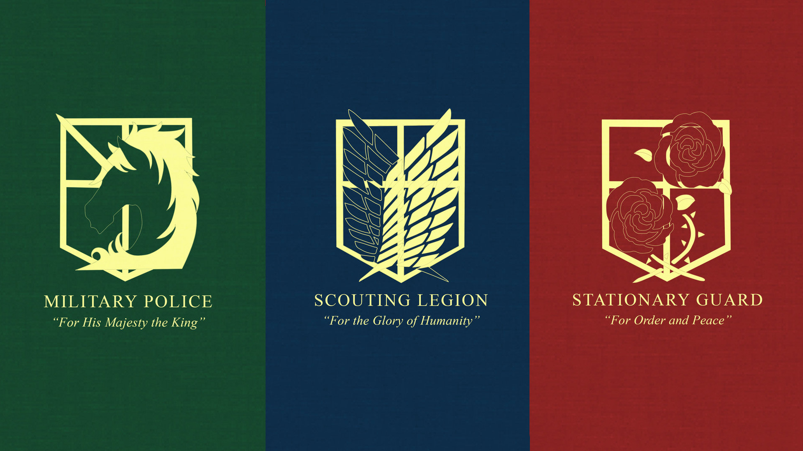

Attack on Titans
Military
The military is divided into three divisions, each led by their own
leader.
The Scout Regiment
Ranked among the most elite soldiers, they are tasked with attempting
to reclaim territory that has been lost to the Titans. Despite being
the most well trained, they often come under dispute from those within
the Walls and are constantly under threat of being disbanded since
they suffer high losses, and usually fail to supply results.
The Garrison Regiment
The Garrison is responsible for patrolling and protecting the Walls.
They are set to the task of evacuating citizens and dispatching Titans
in the case of an emergency breach in the Walls.
The Military Police Regiment
The Military Police are in charge of keeping order inside the Walls
and protecting the Queen. Due to their important function as guardians
of the most important humans, only the top trainees from a graduating
class are permitted to join them. Despite recruiting from only the
best, they are shown to be corrupt and often incompetent due to the
nature of their work inside the Walls, far away from Titans.
Flag

Ranks
All 3 branches of the Military have the same ranks and requirements for reaching each, these are the ranks of the military.- Low Ranks [LR]
- Recruit
- Private
- Private First Class
- Lance Coporal
- Corporal
- Middle Ranks [MR]
- Sergeant
- Staff Sergeant
- Sergeant Major
- Master Sergeant I
- Master Sergeant II
- Warrant Officer
- High Ranks [HR]
- Lieutenant
- Captain
- Section Commander
- High Command [HC]
- Deputy Commander
- Commander
- Premier